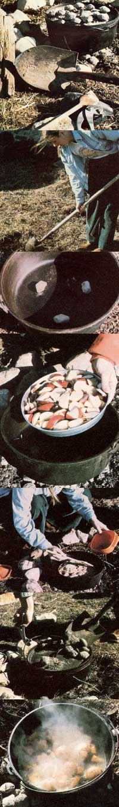

With the autumn leaves-in many parts of the United States-showing off their most dramatic colors (and with midsummer's insects and crowds already things of the past) a good many folks will be heading to the great outdoors for camping or hunting trips. Now there are few better ways to work up a hearty appetite than tramping around in the fresh fall air, but all too often the hungry outdoorsman or -woman can expect no more enticing fare than the usual pan-warmed, freeze-dried backpacker's foods.
Imagine, instead, walking into a campsite that's filled with the savory odors of a tasty slow-cooked supper! Well, such a scenario is actually quite possible . . . if you take a Dutch oven along on your next wilderness excursion. Since the hefty kettles warm slowly and then retain the heat in their thick walls, they can cook food steadily and evenly all day long (while you're out in the woods). Your meal will simmer unattended for hours . . . and-when dinnertime rolls around-you'll have only to lift the lid and dish out a steaming trailside feast!
The sturdy iron utensils are practically maintenance-free, easy to work with, and amazingly versatile, too. You can use a Dutch oven-with only a few alterations in cooking procedures-to fry fish, make soups and stews, broil meat, or bake bread. And-depending on the kind of dish you're preparing-the pot may be hung over an open fire, set on top a bed of hot coals, or buried in an ember-bottomed pit.
ACCEPT NO SUBSTITUTES
The Dutch oven's adaptability is due mainly to its simplicity of design. In fact, when choosing such a kettle, your only real concern will be that you select a "wild" (or outdoor) rather than a "tame" (or indoor) model. Although it's easy to confuse the sturdier trail units with the home versions (which are designed for kitchen range cooking only), several details distinguish the two types.
The "real thing"-or outdoor cooker-is a heavy, cast-iron pot with a flat bottom and three stubby legs . . . which save the vessel from being scorched by the fire and anchor it steadily among the coals. The camping Dutch oven's almost flat lid has a raised lip around the edge (which helps contain the coals that are sometimes heaped on top of it) and a small, curved handle in the center. The utensil will also be fitted with a bail handle, so you can easily lift the whole assembly.
You'll find that the kettles are available in a wide range of sizes, measuring from 8 to 16 inches in diameter and weighing anywhere from 7 to 30 pounds. The Dutch oven's bulky weight-which makes the utensil an awkward item to carry for any distance in a backpack-seems to be its only disadvantage. The hefty pots can be conveniently used, however, on outings that involve driving to a "base" campsite . . . on horse or mule pack trips . . . for backyard cooking . . . or even in your fireplace (or on your woodstove ) at home.
If you're determined to pack one of the large cookers on your back when trek king into the wilds, however, you might want to try one of the newer aluminum models . . . but remember that the lighter material does not have the superior heat-retaining qualities of the more weighty metal.
THE CARE AND FEEDI NG OF A DUTCH OVEN
After you've purchased an oven that suits your particular outdoor cooking needs, you'll have to ready the baking unit for service. First, make sure that its lid fits tightly to seal off the cooking chamber effectively. To do so, simply smear a high-grade valve grinding compound on the rim of the pot and the inside of the lid . . . then set the top in place and rotate it until there's a snug match.
Next, you'll want to remove the protective waxy layer with which the manufacturer has coated the cast iron . . . so give your new oven a thorough scrubbing with a stiff brush, using hot water and mild soap. (This is the one and only time you should need to use soap on the pot! )
Now rinse and towel-dry the iron cooker, and you'll be ready to "season" it-or break it in-for a lifetime of use. This process, which involves working oil into the metal by prolonged heating, gives the outdoor baker a long-lasting "armor" that will all but guarantee nonstick cooking and quick cleanups.
The simplest method of "sweetening" the pot is to deep-fry in the Dutch oven a few times before it's used for any other method of cooking. To begin, fill (to within a few inches of its rim) the vessel with vegetable oil, lard, or other shortening . . . and heat it until a cube of dry bread dropped into the oil will brown in one minute. Then slip chunks of food (such as batter-dipped fish, fritters, or doughnuts) into the bubbling liquid-a few at a time-and cook them until they're golden brown.
On the other hand, you might prefer to season your camp cooker in one session . . . using your kitchen stove. Thoroughly smear all inside surfaces of the pot (including the lid) with shortening or vegetable oil, and then place it in a 350°F oven for one hour. ( The oil will begin to smoke as it heats up, so you may want to open some windows during this process!)
Check on the kettle frequently, and relubricate it about every 15 minutes. At the end of an hour, remove the pot and-after it cools off-wipe out the excess oil, leaving only a thin layer to be further absorbed by the porous metal.
A carefully oil-seasoned Dutch oven should easily wipe clean after each use ... requiring neither detergents nor scrubbing. In fact, the pot will actually get "sweeter" each time you cook in it, as more and more oil works its way into the iron walls. (However, if the cooker should begin, after a while, to rust-or if the food prepared in it has a slightly metallic taste-you can restore its inner "finish" with a thorough reseasoning. )
BAKING IN A DUTCH OVEN
Once your "iron chef" has been fully sweetened, it can be used to prepare just about any one-pot dish you might dream up. You can cook either above or below ground in your Dutch oven, but "fast" dishes (such as biscuits and pies) do best over an open fire, while "slower" meals (like stews, roasts, and yeast breads) turn out better if left to cook for several hours in an earthen pit.
When you're learning to prepare "aboveground" treats, start with uncomplicated one-pan desserts (just use your favorite kitchen recipe for gingerbread, apple crisp, etc.), which don't need much preparation . . . and will often "Dutch" bake in the same amount of time as they'd require in conventional indoor ovens. Your first step will be to scrape out a shallow hole about 18 inches across (as you would before building any campfire) and encircle it with large rocks to contain the flames. Then build a hardwood blaze . . . and let it burn down to embers.
After the big flames have died back, spread the coals out slightly with a shovel and warm the iron lid over that heat source. Next, find three or four small stones of about the same size and arrange them on the bottom of the Dutch oven to form a "rack". Place the batterfilled baking tin on this platform, keeping it as nearly level as possible. Finally, set the whole oven on the coals, seal the lid tightly-giving it an extra half-twist to secure it-and pile about 10 to 15 hot coals on top.
You'll find that you need to check your baked goods' progress more frequently than you might when cooking indoors, and that you'll have to replace the coals on the lid occasionally . . . since the embers burn out quickly when exposed to the open air.
UNDERGROUND COOKING
Some camp cooks think that a Dutch oven really comes into its own when used in a subterranean pit (especially if you're preparing hearty meat dishes). To cook underground, dig a large hole ( make sure it's a few inches wider and deeper than your cooker) and line it with stones or foil. [EDITOR'S NOTE: For safety's sake, be sure your pit is located in, mineral soil-well away from roots and humus-so that the fire can't possibly spread beneath the ground.] Then light a large blaze in the hole and let it burn down to coals. (Or-if possible-simply transfer the leftover hot coals from the breakfast campfire into the pit.)
When cooking a pot roast (or just about any meat, for that matter), it's a good idea to brown the cut-atop the coalsin your preheated, pregreased Dutch oven . . . before adding chopped vegetables (such as potatoes, carrots, celery, onions, or peppers), followed by approximately 1-1/2 cups of water. Then seal the kettle, lower it carefully into the pit, and cover the lid with live coals. Finally, shovel a few inches of earth-to form an insulating layer-on top of the pot, and let the food cook slowly . . . usually for a period of 2 to 4 hours. (If you've added enough water, however, you can simmer the meat for up to 8 hours . . . which should be long enough to tenderize the toughest roast.)
Once you're an expert in the basics of Dutch oven use, you might like to attempt some of the more advanced cooking methods. For example, if you need to bake several dishes at once for a single meal, it's possible to "stack cook" in a pair of the kettles. Or you can make the versatile cooker a flapjack griddle: Simply place it upside down on the coals (as a heat conductor) and set the lid-also upside down-on the kettle's legs to form a frying surface! No matter how you use it, I think you'll find that a Dutch oven is a rugged and practical alternative to conventional camp cookware . . . and a lot of fun, to boot!
WHATS IN A NAME?
It isn't really Dutch in origin-and it's certainly not a regular oven-so how did the outdoor cooker earn its unusual name? Well, what may seem like a misnomer actually makes sense, in light of the sturdy utensil's history.
The advantages of cooking in portable cast-iron kettles were well known to early settlers on the Atlantic seaboard, who carried the covered pots with them when they moved westward. As the "new", relatively small cookers became increasingly popular, they were massproduced by northern manufacturers ... and then eagerly snapped up by Dutch traders for use in their barter with the Indians . . . and in that way the oven gained its ethnic label.
The design of our modern Dutch oven hasn't changed much since colonial craftsman Paul Revere perfected the original pioneer model ... and the hearty victuals it produces today are every bit as tasty as (and often quite similar to) meals that our ancestors enjoyed.
TRY ONE YOURSELF
If this article has whetted your appetite for rib-sticking outdoor meals-and you'd like to learn Dutch-oven cookery-you might be able to find the vessels at your local hardware or camping equipment store ... or you can order one directly from a manufacturer. The iron pots are most often available commercially in five- and nine-quart sizes (which measure roughly 10 to 13 inches in diameter). A good manufacturer is the General Housewares Corp., Dept. TMEN, P.O. Box 4066, Terre Haute, Indiana 47804. These folks-at the time of this writing-offer the conventional five-quart (for $15.25) and nine-quart (for $33.00) sizes . . . as well as a minimodel (a two-quart bean pot, which measures 8" in diameter) for $10.75, postpaid.
EDITOR'S NOTE: To examine a few really good reasons to explore the outofdoors after summer's crowds have gone, turn to the article on page 72.
|
 Top to Bottom: ... The ""tools of the trade"" for Dutch oven cookery include a pair of curved pliers (for removing the lid and lifting the pot), a wooden spoon (for stirring), and a shovel (for digging the pit and moving coals) ... Dig a hole large enough to hold the iron utensil for slow underground cooking ...Several small stones, placed in the bottom of the oven, will make an even baking platform ... For a delicious dessert, sliced apples are placed in the oven ... topped with a mixture of cinnamon, flour and raisins ... and baked quickly, once the utensil's lid is heaped with coals ... You can make stew in the versatile cooker. |
|
|